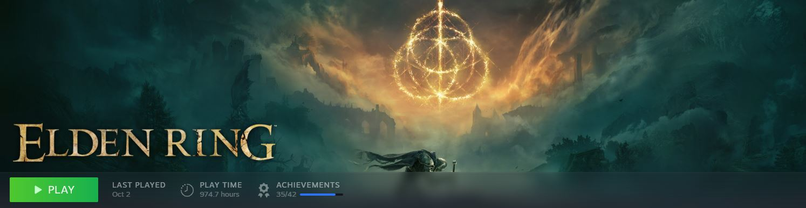

Gaming started as something I could do only occasionally, my childhood console being a gamecube, but it quickly became my way to cope with grief and a source of constant comfort. For me, video games are more than just games; they are an elevated art form where stories are felt and experienced, not just imagined. The process of making a game from writing to graphics to audio, and combining it all is incredibly complex. The fact that amazing games are created despite the challenges is fascinating to me. This fascination led me to choose my dream profession: video game design.
